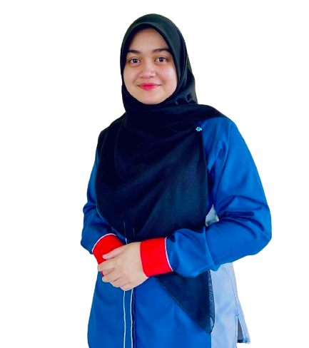
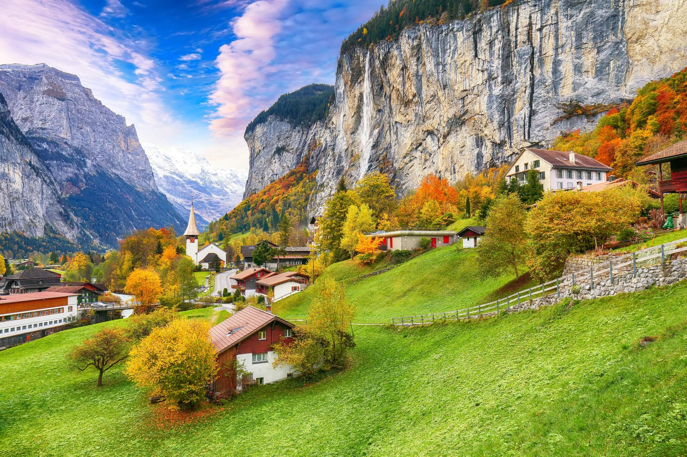
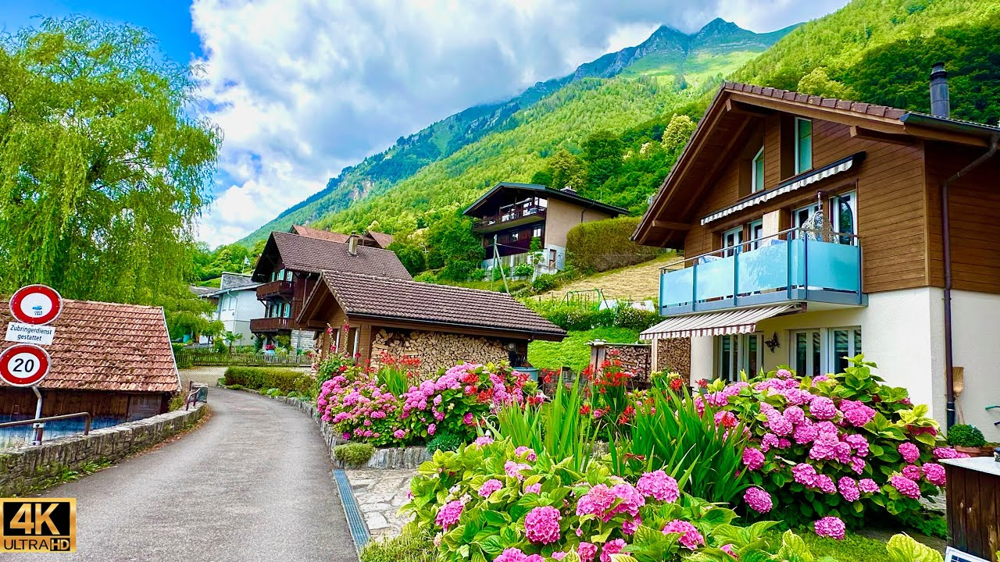
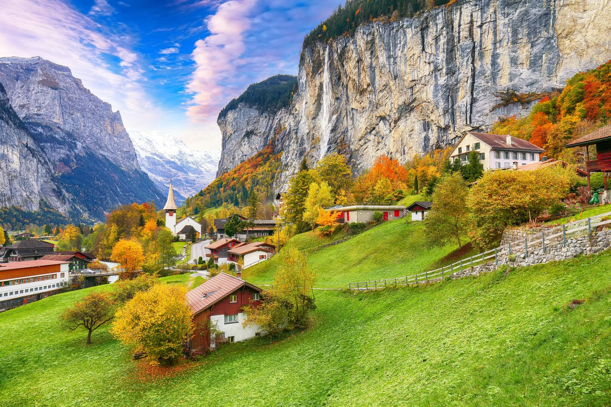
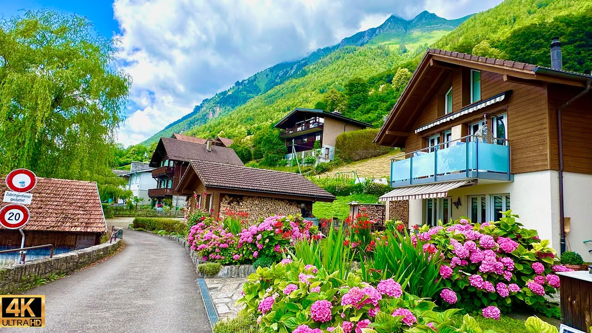

About Me
Biodata
Full name: Nur Amalina Ayuni binti Che Ismail
Surname: Ayuni
Age: 22 years old
Place of Birth: Pasir Mas, Kelantan
Hobbies
As much as I enjoy watching movies, my heart truly belongs to reading — that's where I find my joy. Among my collection, fantasy and action novels take the top spot. Whenever I have free time, you won't find me anywhere, cause I'll be immersed in adventerous, losing myself in every chapter.
Bucket List
Switzerland
I have always been captivated by the beauty of Switzerland captured in photographs. I often find myself dreaming where I wake up to the breathtaking sight of those majestic mountains. Imagining strolling all alone, but every step accompanied feels like a scene from a fairy tale. The thought of losing myself in my favorite novel, with every page turn framed by such heavenly view. It has always been my dream, hoping one day it become my reality.
 


